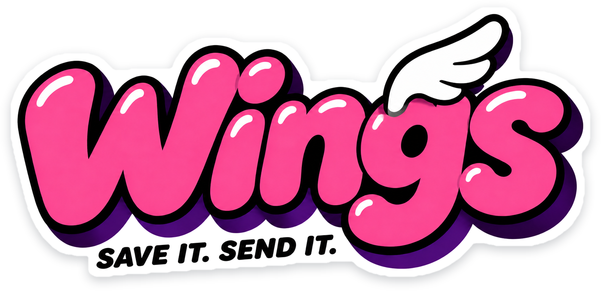

AI is thinking
My mind is racing
Wings is a window that docks to the right of Claude, ChatGPT and other AI apps. No need to wait for the AI to finish: keep typing your plans and ideas.

While the AI thinks and runs for minutes,
where does your next message go?
Long tasks run for ten minutes or more. Ideas don't wait, and the usual places to put them aren't great.
Three steps, no thinking required
Write as usual
Type your next message in the AI's input box, like always.
Save to Wings
Click "Save to Wings" above the input, or press ⌥S. The input clears and the message moves to the sidebar.
Click to paste back
When the AI is done, click the note and it goes back into the input. Check it, then press Enter.
Small tool, carefully made
Follows you, or stays put
Switch to another AI app and the sidebar docks beside it. Or stick to one app, or float anywhere on screen.
Never sends for you
It pastes, it never presses Enter. Sending is your call.
Also on your clipboard
A clicked note stays on the clipboard too, so ⌘V puts it anywhere.
Images too
Save a screenshot as an image note and paste it back as is.
Only on your computer
Notes live on your Mac. No account, no upload.
Right beside the AI you use
The "Save to Wings" button works in these apps. Any other app can be followed and pasted into; just tick it in Settings.
FAQ
Will it send messages for me?
No. Wings only pastes the note into the input box. It never presses Enter.
Why does it need Accessibility access?
Saving and pasting simulate select all, cut and paste, which macOS only allows after you enable it in Privacy & Security → Accessibility. Wings walks you through it on first launch.
Does Wings read my conversations?
No. It only cuts the text in the input box when you save. To tell whether the input is empty it checks locally for text, without storing or uploading anything.
Where are notes stored?
In Wings' data folder on your computer. No account and no cloud sync.
Can I change the save shortcut?
Yes. Click the shortcut in Settings and press one modifier plus one key, like ⌥S or ⌃E.
Does it work in terminals?
It can follow and paste into Terminal or iTerm2. The input line belongs to whatever program is running there, so saving isn't supported.
Is there a Windows version?
It's in progress and will be released here when ready.
Where it came from
Wings comes from Coffee CLI by the same author. Its side panel, first called Tasks and later Pre-input, sends saved messages to the AI in one click. Wings brings that to every AI desktop app.